給 Mac 一條
真正的工作列
A real taskbar
for your Mac
每個視窗一顆按鈕、單按 ⌘ 開啟開始選單、右下角有時鐘和完整系統匣。
還能讓小車在工作列上跑、養一缸魚，或從系統匣下一盤棋。
Every window gets its own button, a single tap of ⌘ opens Start, and the clock and a full system tray sit in the corner. Want more fun? Let a little car drive above your taskbar, keep an aquarium, or play a game of chess from the tray.
熟悉的工作方式，搬到 Mac 上The workflow you know, now on Mac
不用改習慣：點一下切換、再點一下隱藏，視窗一個一個排在工作列上。No new habits to learn: click to switch, click again to hide, every window laid out on the taskbar.
單按 ⌘ 開始Tap ⌘ for Start
只有單獨按一下 ⌘ 才會觸發，⌘C、⌘Tab 等組合鍵完全不受影響。可選左 ⌘、右 ⌘ 或關閉。Only a lone tap triggers it — ⌘C, ⌘Tab and other shortcuts work as usual. Choose left, right or either ⌘.
開始選單 + 搜尋Start menu with search
打字就搜、Enter 開啟。釘選、所有應用程式、常用資料夾、電源選項，大小可拖曳調整。Just type and press Enter. Pinned apps, all apps, folders and power options — and you can resize it.
每個視窗一顆按鈕One button per window
像「永不合併」一樣列出每個視窗，可拖曳排序，滑鼠中鍵直接關閉視窗。也能切回合併模式。Like “never combine”: every window listed, drag to reorder, middle-click to close. Combined mode is one click away.
完整系統匣A full system tray
電量、音量滑桿、Wi-Fi、藍牙、輸入法、CPU / 記憶體 / 網速迷你圖、專注模式，每個都能單獨開關。Battery, volume slider, Wi-Fi, Bluetooth, input source, CPU / memory / network sparklines and Focus — each one optional.
點時鐘看月曆Click the clock for a calendar
跳出月曆和當天行程；秒數、日期、24 小時制都能切換。最右下角一像素就是「顯示桌面」。A pop-up calendar with today’s events; seconds, date and 24-hour time are all toggles. The very last corner pixel is Show Desktop.
外觀隨你調Make it yours
毛玻璃、深淺色、漸層底色、高度、圖示置中或靠左；還有三款懷舊主題包（經典灰、藍天綠地、晶透玻璃），全部自己畫。Glass styles, gradients, height, centered or left icons — plus three retro theme packs, all hand-drawn from scratch.
每個螢幕都有Every display
外接螢幕各有一條工作列，只顯示當前桌面空間的視窗。Each display gets its own taskbar, showing windows on the current Space.
20 種語言20 languages
預設跟隨系統語言，也能隨時切換，立即生效。設定可匯出成 JSON 分享給朋友。Follows your system language or switch anytime, instantly. Export your setup as JSON and share it.
RGB 燈效，跟著音樂律動RGB lighting that dances to your music
21 種燈效，可調速度、顏色和方向。打開「跟著音樂」，工作列會顯示系統聲音的真實頻譜，低音一來就閃（只計算頻譜，不錄音）。21 effects with adjustable speed, color and direction. Turn on music mode and the taskbar shows a live spectrum of your system audio and pulses with the bass — only the spectrum is computed, nothing is recorded.
讓工作列上方熱鬧起來Bring the space above your taskbar to life
場景都在透明視窗裡，滑鼠點擊會直接穿透，不影響工作。可以同時開好幾個，各自調整高度、寬度和速度。Scenes live in a click-through layer, so they never get in your way. Stack several at once and tune each one’s height, width and speed.
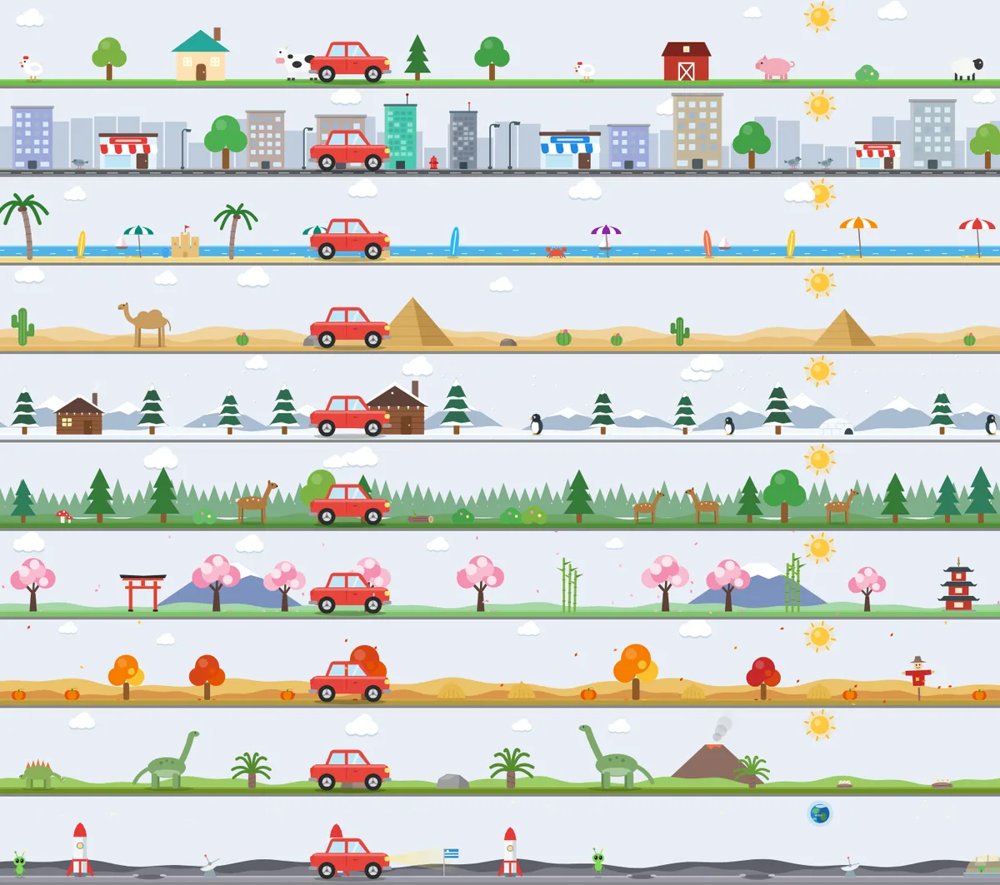
🚗 小車場景Little car
- 10 種場景：鄉村、城市、海邊、沙漠、雪地、森林、櫻花、秋天、恐龍時代、月球10 worlds: countryside, city, beach, desert, snow, forest, cherry blossom, autumn, dinosaurs and the Moon
- 主角可換成摩托車、跑者、貓、狗、兔子、鳥、老虎、大象、馬、牛Swap the car for a motorbike, runner, cat, dog, rabbit, bird, tiger, elephant, horse or cow
- 日夜循環：白天有太陽，晚上有星星和車頭燈Day and night: sun by day, stars and headlights after dark
- 跟系統連動：沒電冒黑煙、插電去充電站、CPU 越忙跑越快、閒置時打瞌睡、有通知時鴿子送信飛過It reacts to your Mac: smoky when the battery is low, heads to a charger when plugged in, speeds up with CPU load, naps when idle, and a pigeon flies by with each notification
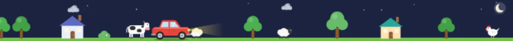
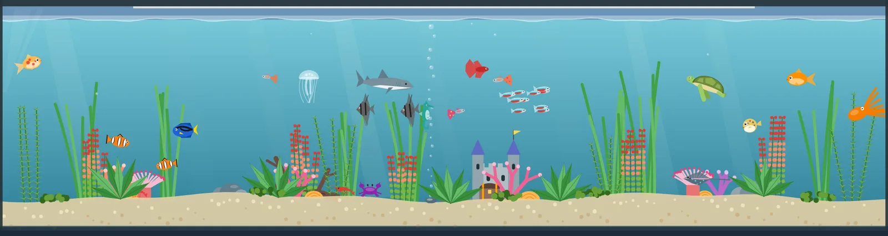
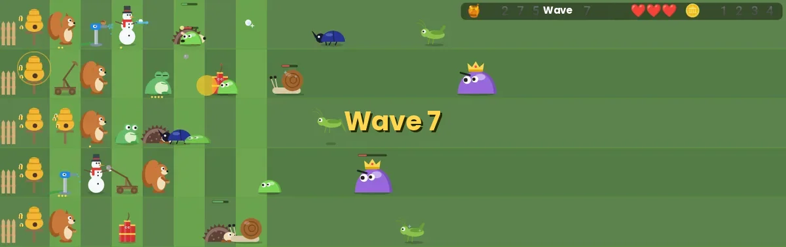
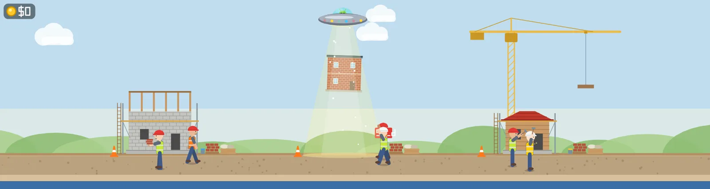
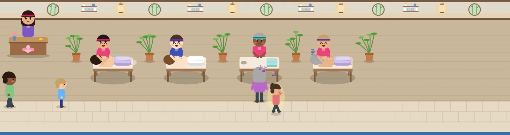
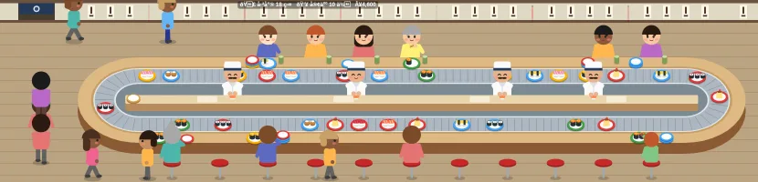
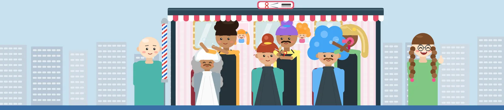
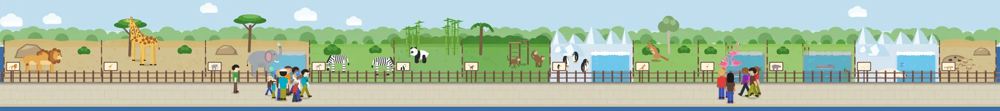
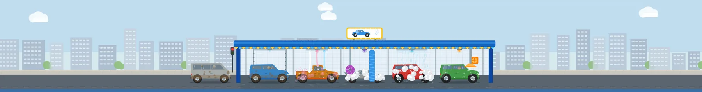
另外還有：🏘️ 村民採集蓋城、🚀 橫向捲軸射擊、🐍 自己玩的貪食蛇。Also: 🏘️ villagers gathering resources, 🚀 a side-scrolling shooter, and 🐍 a self-playing snake.
從系統匣打開，點外面就收起來Open from the tray, click away to hide
遊戲進度會保留，關掉再開還停在原地。音效和音樂全部由程式即時合成。Progress is saved, so you pick up right where you left off. All sound effects and music are synthesized in code.
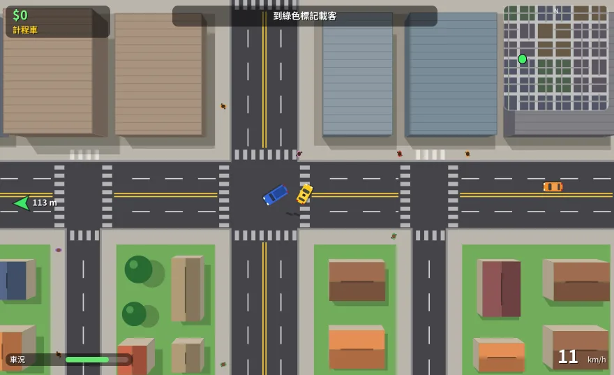
🚕 城市司機City driver
無限隨機城市，開計程車、送貨、外送、當警察追嫌犯，還有氮氣加速。An endless generated city: taxi, delivery, food runs and police chases — with nitro.
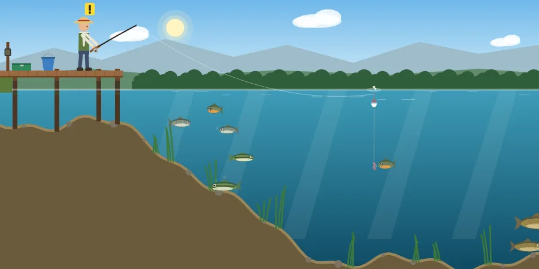
🎣 釣魚Fishing
看浮標抓時機揚竿、控制張力收線，8 種魚和傳說中的黃金錦鯉。Watch the bobber, strike on time, manage line tension. 8 fish and a legendary golden koi.
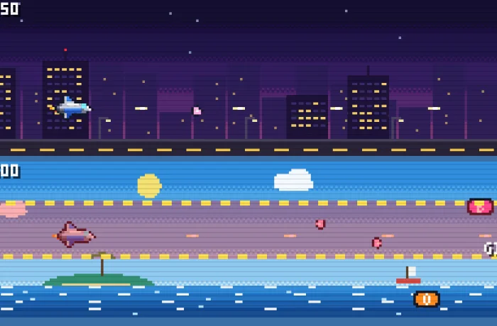
✈️ 飛機射擊Space shooter
7 關加魔王、三種難度，8-bit 音效和每關不同的背景音樂。7 stages plus bosses, three difficulties, 8-bit sound and a soundtrack per stage.
🌻 花園防線Garden defense
5 條車道自己派兵，收集花蜜、擋住害蟲，升級跟動畫場景共用。Deploy defenders across 5 lanes, collect nectar, hold off the bugs. Upgrades shared with the scene.
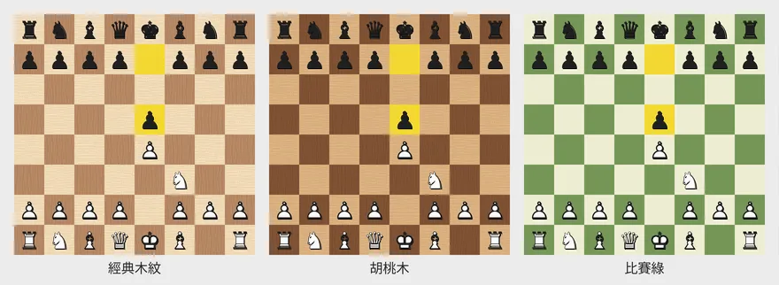
♟️ 西洋棋Chess
完整規則、三種難度的電腦對手、提示和悔棋，10 種棋盤樣式。Full rules, a computer opponent at three levels, hints and undo, 10 board styles.
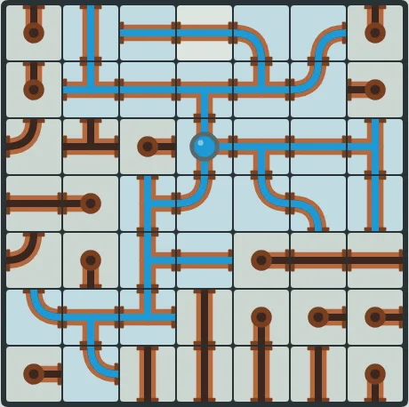
🚰 接水管Pipes
轉動水管讓水流通，兩種模式、四種大小，每一關都保證有解。Rotate pipes to connect the water. Two modes, four sizes, every puzzle solvable.
⚫ 圍棋Go
9 / 13 / 19 路，跟電腦或朋友下，打劫、悔棋、自動數地。9×9, 13×13 or 19×19 against the computer or a friend, with ko, undo and scoring.
🏰 塔防Tower defense
7 種塔、8 種敵人、類 roguelike 強化卡，用分享碼和朋友比同一張地圖。7 towers, 8 enemy types, roguelike upgrade cards — share a seed code to race friends on the same map.
🌾 農場Farm
開墾、播種、澆水、收成，作物照真實時間長，關掉也會繼續長。Till, plant, water, harvest. Crops grow in real time — even while it’s closed.
工作列永久免費，好玩的部分一次買斷The taskbar is free forever. The fun stuff is a one-time purchase.
下載後 Pro 功能可以免費試用 14 天，喜歡再用 US$10 買斷，沒有訂閱。Every download includes a 14-day Pro trial. Love it? Unlock it for US$10 once — no subscription.
免費版Free
- 工作列、單按 ⌘ 開始選單Taskbar and tap-⌘ Start menu
- 完整系統匣與月曆Full system tray and calendar
- 外觀自訂與懷舊主題包Appearance options and retro themes
- 多螢幕、20 種語言、設定匯入匯出Multiple displays, 20 languages, settings import / export
Pro 一次買斷One-time
- 免費版的全部功能Everything in Free
- RGB 燈效（含跟著音樂律動）RGB lighting, including music mode
- 全部 12 個動畫場景All 12 animated scenes
- 全部 9 款互動小遊戲All 9 mini games
- 之後新增的 Pro 內容Future Pro additions
四步驟，兩分鐘裝好Four steps, two minutes
下載並解壓縮Download and unzip
把 Mochabar 拖進「應用程式」資料夾，然後打開。Move Mochabar into Applications and open it.
允許「輔助使用」Allow Accessibility
用來列出、切換和關閉視窗。歡迎畫面會一步步帶你設定。Needed to list, switch and close windows. The welcome screen walks you through it.
允許「輸入監控」Allow Input Monitoring
只用來偵測「單按 ⌘」，授權後約 2 秒自動生效。Only used to detect a lone ⌘ tap; it kicks in about 2 seconds after you allow it.
把 Dock 讓開Move the Dock aside
歡迎畫面有「一鍵套用建議」：Dock 移到右邊並隱藏選單列。The welcome screen can do it in one click: Dock to the right, menu bar hidden.
常見問題Questions
它會取代 Dock 嗎？Does it replace the Dock?
不會，兩者可以同時存在。大部分人會把 Dock 設成自動隱藏或移到側邊。No, both run side by side. Most people set the Dock to auto-hide or move it to a side.
為什麼需要這些權限？會記錄我打的字嗎？Why the permissions? Does it record what I type?
輔助使用用來管理視窗；輸入監控只判斷 ⌘ 有沒有被單獨按下。你打的字不會被記錄，也不會傳到任何地方。音樂律動只計算頻譜，不錄音。Accessibility manages windows; Input Monitoring only checks whether ⌘ was tapped on its own. Nothing you type is recorded or sent anywhere. Music mode only computes a spectrum — nothing is recorded.
最大化的視窗會被工作列蓋住嗎？Will maximized windows overlap the taskbar?
macOS 沒有公開 API 能保留螢幕底部空間，所以最大化的視窗可能會被蓋到一點點。macOS has no public API to reserve screen space, so maximized windows may slightly overlap it.
Pro 怎麼啟用？可以換電腦嗎？How do I activate Pro? Can I move it to another Mac?
購買後授權碼會寄到你的信箱，貼到「設定 → 授權與購買」即可。一個授權碼最多 3 台 Mac，可以在設定裡停用某台電腦釋出名額。Your license key is emailed after purchase — paste it in Settings → License. One key works on up to 3 Macs, and you can deactivate one to free a slot.
試用期結束會怎樣？What happens when the trial ends?
工作列和所有免費功能照常使用，只有 RGB 燈效、動畫場景和小遊戲會鎖起來，你的設定都會保留。The taskbar and all free features keep working. Only RGB lighting, scenes and games lock — your settings are kept.
安全嗎？Is it safe?
App 使用 Developer ID 簽署並通過 Apple 公證，第一次打開不會跳出「無法驗證開發者」。It’s signed with a Developer ID and notarized by Apple, so it opens without the “unidentified developer” warning.